If you're not aware, there is a Slack workspace for computer science students here at PSU. If you haven't already, create a Slack account, join the workspace at https://pdx-cs.slack.com and add the course channel linked on the course web page. All course communication will be done through this platform; check the pinned section for important updates. Note that the course has a corresponding webpage for more permanent information. You can contact the professor via Direct Message @wuchang.
If you have a sensitive comment that you wish to notify me of anonymously, you may do so by visiting this page in an Incognito window: https://bit.ly/sayat-wuchang
We'll be using GitLab for the course's source control. Create an account via Google using your @pdx.edu email address by visiting https://gitlab.com/users/sign_up.

Upon completion, use the same credentials to login to GitLab. After logging in you should see the following:

Go to the upper right hand corner and click on the dropdown that is your user profile. You should see the option for "Preferences". Click on this option and you'll be taken to a page for customization of your avatar, status, and main settings.

In the left hand column there is an entry for SSH Keys. Select that entry and wait here. We're going to create a local public/private key pair to securely transfer data between the local repository and this remote hosted by GitLab.
SSH Keys
We will now create a local public/private ssh key pair on our Linux VM to securely transfer data between a local git repository and this remote hosted by GitLab.
Log into your Linux VM and change into the directory where SSH keys are stored:
cd ~/.ssh/
If you have not setup an SSH key before, perform the following
ssh-keygen -t rsa
We're specifying rsa here for clarity, although this is the default encryption method. Hitting enter will create a file named id_rsa which we'll use as an example. You should now have two files containing the key-pair in the ~/.ssh/ directory. One has a .pub extension and is your public key. The other is your private key and should never be revealed.
We will now add this public key to GitLab. Dump the contents of the key out:
cat id_rsa.pub
Then, copy and paste this into the SSH key field on GitLab in your browser. Finally, click "Add Key".

Create Project
Go back to the projects page and create a "New project" that is blank. 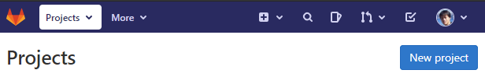
Name the new project via the ProjectName above. Make sure the repository is still marked "Private" and initialize it with a README file.

Invite Instructor and TA as project developers
Next, go to the Settings tab and select members. From here you can add members to your project by typing in their username. Add the instructor and the TA as Developers to your project via their pdx.edu e-mail addresses (e.g.
 Setup client
Setup client
On your Linux VM, set up your name and e-mail address for git.
git config --global user.name "<FirstName> <LastName>" git config --global user.email "<OdinID>@pdx.edu"
Then, clone the repository to your machine and change directories into it.
git clone git@gitlab.com:<GitLab-Username>/<ProjectName>.git cd <ProjectName>
We will now edit our first file and commit its changes to our repository. To do so, edit README.md file to show multiple styles of titles and lists in Markdown. Then, stage the file for addition, commit the file to the local git repository, then push the local commits to the remote version on GItLab.
Now, add it to the list of changed files that you want to stage to commit to the repository.
git add README.md
Commit all changed files that have been staged to the local git repository.
git commit -m "add README"
Then, push the copy of the local Commit all changed files that have been staged to the local git repository.
git push -u origin main
.gitignore
It is often the case that you'll have files in your local directory that you do not want added to your repository. To specify that these files should not be included in any commits, git uses a file called .gitignore. Create a .gitignore file that contains files that are common to Python that you do not want to add to your repository.
env/
*.pyc
__pycache__/Then, add it to the files you wish to commit, commit the file to your local repository, and then push the local repository to its remote.
git add .gitignore git commit -m "Adding .gitignore" git push -u origin main
git basics
Read the first 6 steps of the following link. You will need to become proficient with the following git commands for this course or use an IDE such as VSCode that can perform the operations for you.
git clone: Fetch a copy of a remote repositorygit add: Add a new file and/or directory to local repositorygit commit: Commit changes to local repositorygit push: Merge changes from local repository to a remote one. Implicitly assumes "origin" (place that you retrieved repo from) and "main" (branch)git pull: Merge changes from remote repository to your local one. Implicitly assumes "origin" (place that you retrieved repo from) and "main" (branch)
Visit https://portswigger.net/web-security and sign-up for an account using your pdx.edu e-mail address:
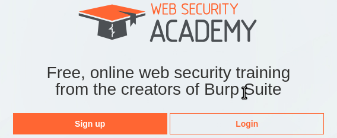
Incognito mode
To avoid applying the coupon you receive to the incorrect account, ensure that these steps are done in an "Incognito" or "Private Browsing" browser window to set up your account.
Then, visit https://console.cloud.google.com and login using your pdx.edu account to enable GCP. If you haven't used GCP yet and do not mind temporarily putting your credit card on the account, apply for the $300 coupon and use it to create a new billing account. Otherwise, wait for the instructor to email you a course coupon.
Create Project
Click on the pdx.edu organization from the console.

Then, click on "New Project"
Create a Google Cloud project with your ProjectName from above.

You should be taken to your project's Home page. For your lab notebook, you will need to ensure that all of your screenshots for your Google Cloud labs include your ProjectName.
To examine your Billing account and its usage, go to the Billing page from the console at https://console.cloud.google.com/billing

First enable the Compute Engine API at https://console.cloud.google.com/apis/library/compute.googleapis.com. We will be using the two WebForPentester virtual machine images (#1 , #2) from PentesterLab. You can run these ISOs locally using VirtualBox if you prefer. A video screencast can be found here. However, for your convenience, rather than running from the ISO, we have hosted them as VM images on Google Cloud. Unfortunately, as these VMs are highly vulnerable, they can be discovered by adversaries and used for malicious purposes. To avoid having your VMs be hijacked, we will first need to set up some cloud-based firewall rules that configure access only from Portland State addresses.
Option #1: Web console
Go to the web console and from the menu selection of services, visit the "NETWORKING" section and click on "VPC network" and select "Firewall rules"
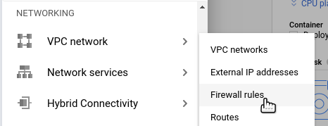
Create a new firewall rule called "pdx-80". Leave it attached to the project's default network and applied on traffic ingress. Specify a "Target tags" for this rule of "pdx-80". The rule is applied to any VM that has specified the "pdx-80" tag in its configuration.
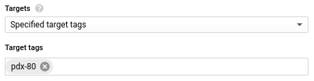
We will now configure the logic of the rule. For the "Source filter", leave it specifying "IPv4 ranges". We wish to allow access only to machines at Portland State. The ranges are specified in CIDR notation. For an overview, you can watch the 40 minute overview in this screencast. Portland State owns a Class B prefix: 131.252.0.0/16. Add this to the "Source IP ranges" field.
Finally, for "Protocols and ports", specify that we want to only allow access to TCP port 80 (the HTTP port) from these addresses. After selecting the port, click on "Create".
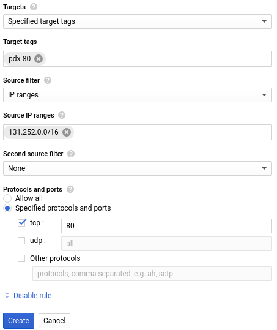
Option #2: Cloud Shell
Google Cloud provides the gcloud command in its SDK for performing common platform tasks such as this. Cloud Shell is a convenient way for accessing the SDK. Visit the web console and click on the Cloud Shell icon to bring up the shell.
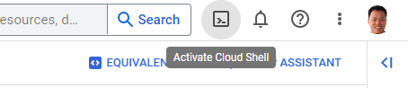
Then, run the command below to instantiate the firewall rule.
gcloud compute firewall-rules create pdx-80 \
--allow=tcp:80 --source-ranges="131.252.0.0/16" \
--target-tags=pdx-80 --direction=INGRESSInstantiate the VM
Go to https://console.cloud.google.com and bring up Compute Engine. Click on "Create Instance"

Name the instance wfp1-vm and place it in us-west1-b, using a Machine type of e2-micro.
For the "Boot disk" click on "Change", then click on the "Custom images" tab. Click on "SELECT A PROJECT" and select from "NO ORGANIZATION". Select cs495-websecurity and open it. In the dropdown, show the images from cs495-websecurity (famous-empire-181720) then select wfp1-nofilter.
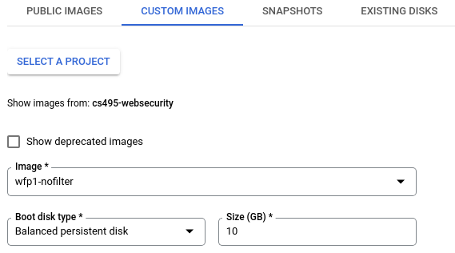
Make sure that "Allow HTTP traffic" is NOT checked. We will be using the custom firewall rule created in the previous step that allows HTTP traffic only from Portland State IP addresses. To do so, click on the "Management, security, disks, networking..." link to expand the configuration interface.
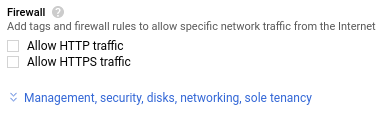
Within the expanded interface, click on the "Networking" tab. In the "Network tags" field, enter in your previously created tag of "pdx-80". Then, click on Create.
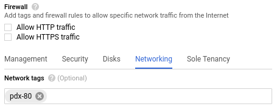
Option #2: Cloud Shell
From the web console, launch Cloud Shell. Within it, run the command below to find the names of the wfp1 image.
gcloud compute images list --project famous-empire-181720 --no-standard-imagesMake a note of the name of the image, then fill in the gcloud command below and launch a VM using the image.
gcloud compute instances create wfp1-vm \
--machine-type e2-micro --zone us-west1-b \
--tags=pdx-80 --image-project famous-empire-181720 \
--image <FMI> Visit the site
Wait several minutes for the VM to spin up. Visit the web site at the external IP address of the resulting VM (http://)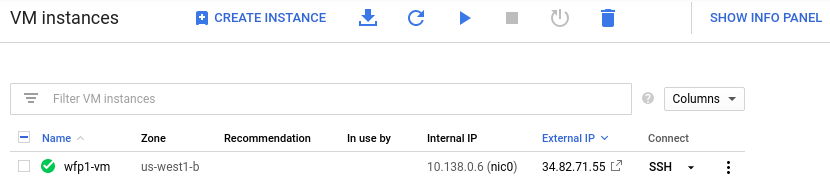
This should bring up the landing page for the first Web For Pentester site.
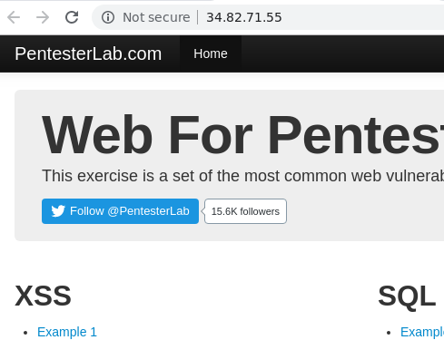
Repeat the following process for the second WFP site. Name the instance wfp2-vm and place it in us-west1-b. For the "Boot disk" select wfp2-nofilter. As before, specify the "pdx-80" tag so that access is only allowed from Portland State addresses.. Note that the site takes some time to load once brought up. The VM can also be brought up via Cloud Shell:
gcloud compute instances create wfp2-vm \
--machine-type e2-medium --zone us-west1-b \
--tags=pdx-80,http-server \
--image-project famous-empire-181720 --image <FMI> Visit it to bring up the second set of exercises.
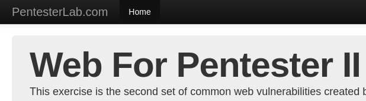
For both WFP1 and WFP2, you can manually ssh into each VM using the following credentials:
wfp : wfp
IP Addresses
Keep track of both the external and internal IP address of each instance. We will be using the internal IP address for automated attacks, but will need to connect via the external IP addresses initially.
wfp1_external_IP, wfp1_internal_IPwfp2_external_IP, wfp2_internal_IP